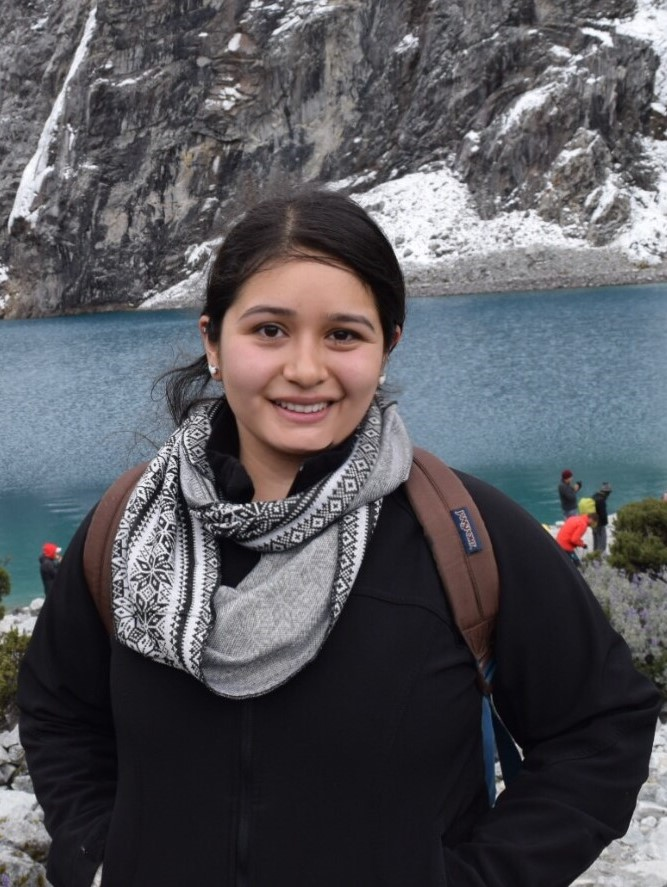

NASA’s FINESST selects CITRIS-affiliated researcher
Brittany Lopez
Barreto
June 11, 2021
By Leigh Bernacchi, CITRIS UC Merced
If Brittany Lopez Barreto was unsure what she would study as an undergraduate student, she has certainly found her passion in remote sensing. The doctoral student is leading cutting-edge remote sensing research, applying satellite technology to wildfire and water quality issues. Using satellites and writing programs to interpret data to reveal hidden problems in water resources is one of the specialties of the Earth Observation and Remote Sensing Lab at University of California, Merced led by Dr. Erin Hestir, Associate Director of CITRIS, UC Merced.

Lopez Barreto has been named a NASA Future Investigator in Earth Space Science and Technology, also known as the NASA FINESST Program. Her proposal on wildfire and water supply was selected from 835 highly competitive proposals, 351 of which were in Earth Science. The program provides 3-year research grants to graduate students who design and perform projects relevant to NASA's Science Mission Directorate.
Given California’s approaching wildfire season and the well-documented increase in intensity, size and frequency of fires, Lopez Barreto’s work is extremely timely. The fires leave soils bare and disturbed making them susceptible to erosion. The sediments make their way through hillsides and streams to reservoirs. The proposal titled "Wildfire Effects on Water Quality in California Water Supply Reservoirs" will use satellite data to calculate the levels of sediment and blue-green algae in water and examine the traits of different wildfires across the state over the past 30 years to provide in-depth watershed analysis for water managers across the state.
A major portion of Western water supply comes from lands where wildfires are a frequent and growing concern, but the effects of the wildfire activities in these watersheds, and risks posed to public water supplies are little understood. As wildfires in the Western U.S. are a commonplace event, quantifying and predicting the effects of fire on water resources is critical for meeting our current and future water needs.
“This cascade of potential consequences make it dire to understand the relationship wildfire has on water quality in order to prepare for the future under climate change. California’s unique climate and ecosystems afford new insights on wildfire’s role on water quality in a landscape that has been facing an increasing amount of wildfire,” said Lopez Barreto.
As an advisor, Hestir has seen tremendous growth all areas that lead to a strong professor, from research to teaching to mentorship. Hestir said, “We in California are lucky to have talented young researchers turning their attention to our water and wildfire issues as¬ the two are inextricably linked. Brittany’s focus on wildfire effects on water quality is critical, but until now understudied aspect of water security and wildfire risk for our communities. We in Merced are doubly lucky to have Brittany’s skill and passion for teaching and mentoring.”
Lopez Barreto started her environmental career pursuing a Bachelors of Science at UC Davis in Environmental Science and Management and upon completion, directly joined UC Merced’s transdisciplinary Environmental Systems program. She also is a teaching assistant for engineering courses on Remote sensing of the Environment and Spatial Analysis and Modeling. Lopez Barreto has also served as CITRIS ¡Valle! Get your start in tech graduate student panel speaker, providing advice to students like her, and was selected for the CITRIS EDGE in STEM mentorship program for 2021, which pairs graduate and undergraduate students across Berkeley, Davis and Merced campuses.
As a first-generation Latina, she recognizes how rare she is in STEM. “I believe it is important to be present and to share experiences in STEM to show that STEM is possible for anyone who is interested,” said Lopez Barreto. “I thoroughly enjoyed speaking to them on a more intimate level because ultimately one’s educational and career path is not entirely black and white, especially coming from a disadvantaged background.”
“Professors are in a special position to be able to grow the next generation of future environmental leaders. A professor’s work does not stop at just academia and research, but also extends to outreach and service. And that’s part of what intrigues me about this higher education career path,” said Lopez Barreto. The work will be shared with water managers across the state.